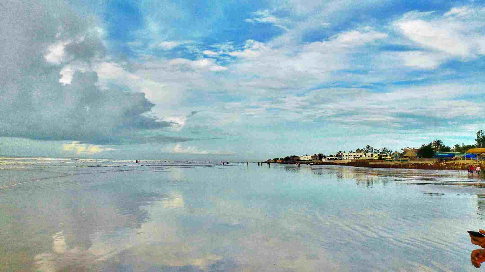
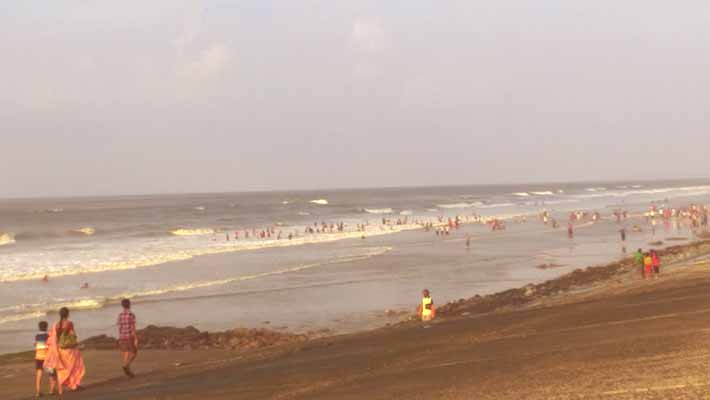
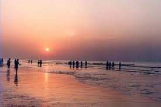

DIGHA
About
Digha is a coastal resort town in the east Indian state of West Bengal. The dune-backed Old Digha Sea Beach faces the Bay of Bengal. Close by, the Marine Aquarium and Regional Centre (MARC) is home to sharks, rays and sea snakes. To the west, inland from sandy New Digha Sea Beach, leafy Amarabati Park surrounds a lake. West of town, the white-domed Chandaneswar Shiv Temple is dedicated to the Hindu god Shiva.


